Bitcoin Core
rawtx, hashblock, getmempoolentry e getmempoolinfo.
Documentação técnica · 2026
Arquitetura, contratos, fluxos, operação e riscos do Mempool Miner em uma base única, versionável e transparente.

Mapa do sistema
Bitcoin Core publica, FastAPI transforma, Redis distribui e o navegador converte seis transações em uma partida.
Componentes
rawtx, hashblock, getmempoolentry e getmempoolinfo.
BIP39, taxa, lifecycle, REST e gateway WebSocket.
Fan-out, contador observado, recordes e persistência AOF.
Grade responsiva, corrida, loja e feedback acessível.
Leitura orientada
Ambiente, regtest, carteira, transações, logs e comandos.
Funções, dados, sequências, REST, WebSocket e decisões.
Achados corrigidos, pendências, critérios de aceite e fases.
Transparência
ZMQ, TXID, RPC, vsize, taxa, hash de bloco, Redis, HTTP e WebSocket são componentes executáveis da stack.
Saldo, carteira, hashrate, recompensa, mineração e Lightning não representam ativos ou operações financeiras.
O score ainda é calculado pelo browser. Até o motor autoritativo do roadmap, o leaderboard não é competitivo nem resistente a fraude.